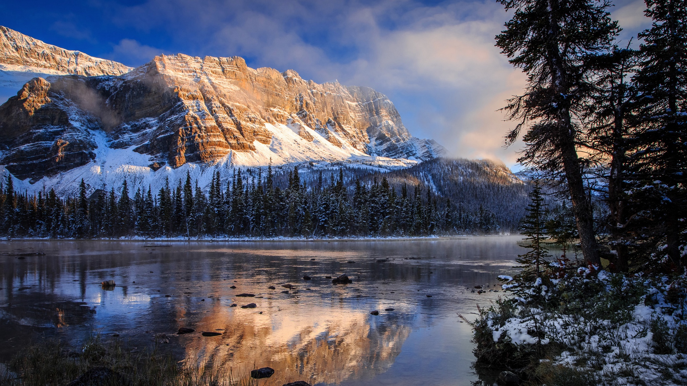
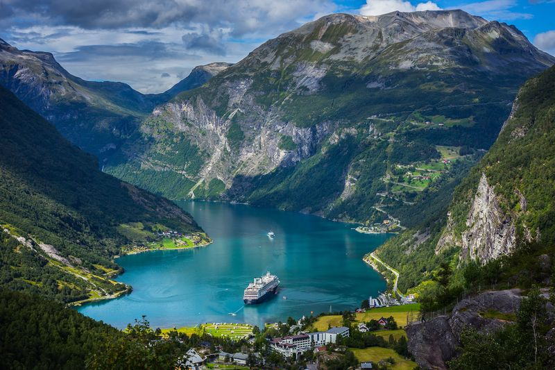

одна из самых экономически развитых стран мира. В ее городах жизнь бьет ключом, к небесам взметнулись громады небоскребов из стекла и бетона, а вокруг царит первозданная тишина степей, лесов и гор, вечный покой нетронутой природы. Со стороны Канада с
ее огромными незаселенными пространствами может показаться почти безлюдной.
В следствие большой широтной протяженности и меридионального расположения географических зон климат Канады чрезвычайно разнообразен. Горные хребты Кордильер ограничивают приток тихоокеанских воздушных масс, зато холодный арктический воздух
беспрепятственно проникает в южные регионы страны. На западном побережье климат смягчается под влиянием теплого Северо-Тихоокеанского течения. В Скалистых горах царит типичный горный климат. Самые обильные осадки выпадают на западе Канады
- нередко свыше 2500 мм в год. Центр и восток страны получают гораздо меньше атмосферной влаги — не более 500 мм за год. В центральной части, где осадки довольно скудны и быстро испаряются, раскинулись травянистые прерии. В холодной приполярной
зоне, где среднемесячные температуры не превышают 10° С, преобладает заболоченная тундра. Климат Восточной Канады умеренно-теплый. Среднегодовая сумма осадков превышает 1000 мм при их равномерном распределении по всем месяцам года. Средняя
температура июля составляет около 20°С. Зимы холодные — в течение трех с лишним месяцев столбик термометра держится ниже 0° С.
ОЗЕРА И РЕКИ
При взгляде на карту Канады поражает обилие больших и малых озер. Площадь самого крупного Большого Невольничьего озера составляет 31,1 тыс. км2. Огромные озера на окраинах Лаврентийской возвышенности лежат в тектонических впадинах, но большинство имеют
ледниковое происхождение. Самая длинная река - Макензи (под этим именем она течет из Большого Медвежьего озера в Северный Ледовитый океан) образована слиянием рек ПисРивер и Атабаска, берущих начало в Скалистых горах. Площадь ее бассейна
составляет 1,76 млн. км2, а длина - 4240 км. Канадские реки, принадлежащие в основном к бассейну Атлантического океана, текут по весьма пересеченному рельефу и изобилуют порогами и водопадами, которые затрудняют судоходство.
ИНТЕРЕСНЫЕ ФАКТЫ
С 1858 г. столицей Канады является основанная в 1827 г. Оттава. Вместе с соседним городом Халл она образует крупную метрополию.
Значительную часть территории Канады занимают озера, большинство из которых имеют ледниковое происхождение.

Бесчисленные озера и реки Канады, входящие в обширную сеть поверхностного стока, образуют взаимосвязанные озерно-речные системы.
Около половины территории Канады занимает Лаврентийская возвышенность, западную границу которой образует линия между Большим Медвежьим озером на севере и Лесным озером на крайнем юге. Геологи называют эту обширную зону Канадским щитом.
Средняя высота местного ландшафта составляет около 500 м, однако по окончании ледникового периода кое-где обнажились остатки древних складчатых гор высотой до 1190 м. Лаврентийская возвышенность лежит в бассейне Атлантического океана
и славится своим живописным озерно-холмистым рельефом. Центральную часть Канадского щита заполняет Гудзонов залив. На его берегах раскинулась одноименная низменность, возникшая в результате поднятия рельефа и отступления моря после
таяния ледников. Сравнительно недавние тектонические процессы привели к формированию Арктического архипелага. На территорию Канады заходят окраинные хребты американских Аппалачей. Они окаймляют с юга долину реки Св. Лаврентия и торчат
острыми зубцами островов близ восточного побережья. Эти старые, расчлененные обрывистыми ущельями горы образуют систему небольших плато высотой не более 800 м. Многообразие горных пород и геологических структур предполагает наличие
в этих краях богатых минеральных ресурсов. Высшая точка этой части Аппалачей — г. Жак-Картье (1268 м). На стыке Лаврентийской возвышенности и Аппалачей лежит долина реки Св. Лаврентия, представляющая собой тектоническую депрессию.
ПРИРОДА
Лежащую на Крайнем Севере зону арктических пустынь по мере продвижения к югу сменяет тундра, начинающаяся от кромки вечных снегов. В холодном климате на скованной вечной мерзлотой почве выживает лишь скудная тундровая растительность — однолетние травы
и кустарнички. Далее к югу тундра переходит в редколесье, а затем в широкую полосу бореальных лесов. В таежных массивах преобладают хвойные породы, и только на юге появляются незначительные вкрапления лиственного древостоя. На побережье
обитают тюлени и моржи, а на Крайнем Севере — белые медведи. К типичным жителям тундры относятся также северные олени, полярные зайцы, песцы и лемминги, а из птиц — полярные совы и тундровые куропатки. В зоне тайги обитают лоси, олени
вапити, красные белки, летяги, дикобразы, куницы и бобры. Для смешанных лесов характерны такие крупные хищники, как медведь барибал, гризли, волк, рысь и росомаха. Реки и озера богаты рыбой.

ЭКОНОМИКА
Под сельскохозяйственными угодьями в Канаде занято около 74 млн. га (средняя площадь одной фермы - свыше 240 га). В стране существуют два крупных аграрных района. Первый расположен на плоских равнинах по берегам Великих озер и в долине реки Св. Лаврентия.
Здесь выращивается вся канадская кукуруза и соя, 90% винограда и табака, а также добрая половина картофеля и овощей. Этот же регион поставляет на национальный рынок 50% молока и яиц. Вторая по значению аграрная область - это прерии, знаменитые
высокими урожаями пшеницы и развитым животноводством. Прекрасная сырьевая база служит надежной основой для развития лесного хозяйства. По некоторым оценкам Canada владеет более чем 9% всех лесных площадей планеты. С лесозаготовками и деревообработкой
непосредственно связано современное целлюлозно-бумажное производство. Одной из старейших отраслей национальной экономики является рыболовство. Значительную часть улова получают в прибрежных водах Атлантики и Тихого океана, хотя внутренние
водоемы тоже имеют немаловажное промысловое значение. Владея богатыми запасами полезных ископаемых, Canada занимает первое место в мире по добыче никелевых и цинковых руд. В стране имеются крупные месторождения меди, железа, золота, свинца
и молибдена, а каменный уголь является одной из ведущих статей экспорта. Добываемый в стране уран используется как топливо для АЭС. Ведется разработка залежей природного газа и нефти.
Мощный импульс развитию канадской экономики дала II мировая война. В стране выросла военная промышленность, возник ряд новых отраслей, усилился приток американских инвестиций, развернулась широкомасштабная торговля между
соседними государствами. Углубление американо-канадской экономической интеграции продолжается и сегодня. США выступают главным экспортным партнером Канады, а около 30% канадских предприятий принадлежат американским компаниям.
КОРЕННЫЕ ЖИТЕЛИ И ПОСЕЛЕНЦЫ
Коренные жители Канады — индейцы и эскимосы. Большинство индейского населения рассеяно по таежным резервациям, и определенная их часть по-прежнему живет за счет охоты и рыболовства. Основное занятие эскимосов, населяющих северное побережье Канады, Баффинову
Землю и полуостров Лабрадор - морское рыболовство. Национальный состав и размещение населения сложились в результате начавшейся в XVI веке колонизации этой части континента европейскими поселенцами. Не одну сотню лет эти края были ареной
жестокого противоборства английских и французских колонистов. Если французы селились в долине реки Св. Лаврентия, то англичане прочно обосновались на Ньюфаундленде, в Новой Шотландии и в районе Великих озер. Тем не менее к исходу XIX века
была освоена лишь ничтожно малая часть территории Канады, и только прокладка трансконтинентальной железной дороги дала толчок массовому заселению прерий. В те годы Canada приняла несколько миллионов иммигрантов .из Западной и Восточной
Европы, в т. ч. выходцев из Украины.
Провинции и территории Каналы (в скобках адм. центры):